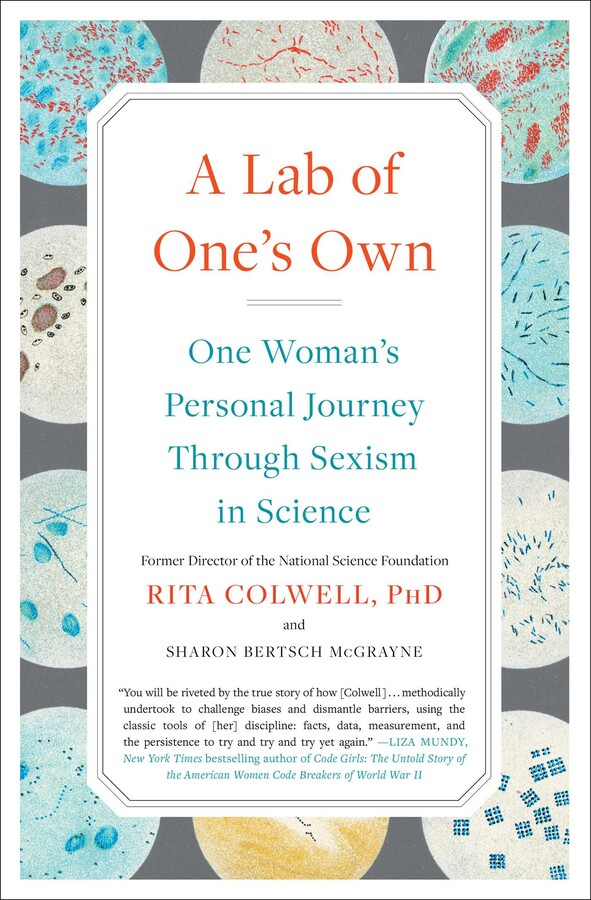

A lab of one's own
Recently, I attended a Women in Science symposium at my workplace. The research presentations were interesting, but the best part was getting to talk to other women scientists. At lunch, I ended up sitting at a table with four women PIs (principal investigators, or PhD scientists running their own labs) and listened to them talk.
What really struck me was how much they were there for each other. It reminded me of my experience studying computer science at Carnegie Mellon, where I found an amazing group of women in CS. They understood what it was like to be dismissed by a male classmate, or to feel like an imposter in a field full of men. Having supportive peers and mentors is crucial to success in any discipline, and especially so when you are a woman in a place where women haven’t always been welcomed.
I also recently read A Lab of One’s Own by Rita Colwell, PhD, a woman scientist who has led a fascinating life.

Rita Colwell is one of the top scientists in America: the groundbreaking microbiologist who discovered how cholera survives between epidemics and the former head of the National Science Foundation. But when she first applied for a graduate fellowship in bacteriology, she was told, “We don’t waste fellowships on women.”
Colwell’s life story is incredible. Here’s the story behind her groundbreaking research on cholera: Cholera is a deadly disease caused by Vibrio cholerae bacteria. Scientists have known since 1854 that cholera can spread through sewage-contaminated water. What remained puzzling was where Vibrio cholerae lived between epidemics. Cholera tends to occur in sporadic outbreaks. But no one had found Vibrio cholerae living inside a healthy person when there was no epidemic, and the bacteria died quickly if removed from the human gut. So how did it survive until the next outbreak?
Colwell had studied marine microbiology in graduate school. She began to suspect that Vibrio cholerae was capable of living in salt water, like the marine bacteria she knew so well. Colwell followed her hunch and eventually found disease-causing Vibrio cholerae living in the Chesapeake Bay and an estuary in Bangladesh. Her discovery went so radically against the prevailing view on cholera at the time that it took decades for her work to be fully accepted by other scientists in her field. She faced mockery and dismissal many times along the way.
Colwell writes of that experience:
To this day, I do not believe that I– or my students– would have been treated with the same disdain had I been a man. When people ask me how I had time to publish more than eight hundred scientific papers over the course of my career, I tell them I had no choice: as a woman, I had to prove my findings twenty times over just to get them taken seriously.
Her book is full of inspiring stories as well: those who supported her (women and non-women) and other women scientists who pushed for fair treatment. She has a fascinating story about her role in investigating the 2001 anthrax attacks. She discusses her work as head of the National Science Foundation and provides advice for aspiring scientists who would follow in her footsteps.
The scientific community can only lose when people are pushed out by discrimination of any kind. I’ll continue to be inspired by those like Rita Colwell who paved the way for my generation of scientists to thrive.